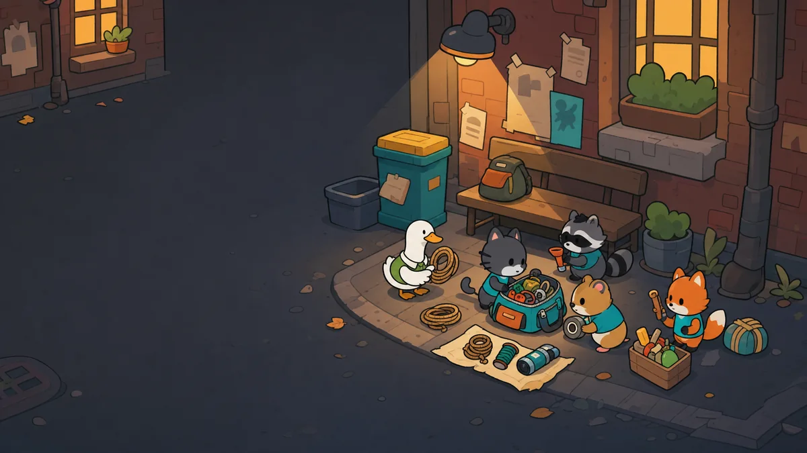

IN PROGRESS
Turf Bag:
Alley Mafia
Build the perfect bag, merge weapons into stronger tiers, and create powerful adjacency synergies while rival alley gangs escalate wave after wave.
Pack smart. Push deeper.
Every run is a tactical choice between banking your haul and risking it all for better loot.
- Fit, rotate, and merge weapons in a Tetris-style bag grid
- Build adjacency synergies that reshape your automatic battles
- Face escalating gangs, collect loot, and extract before your luck runs out